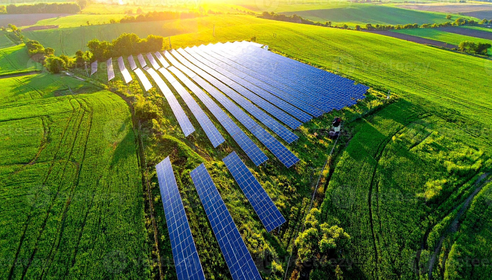
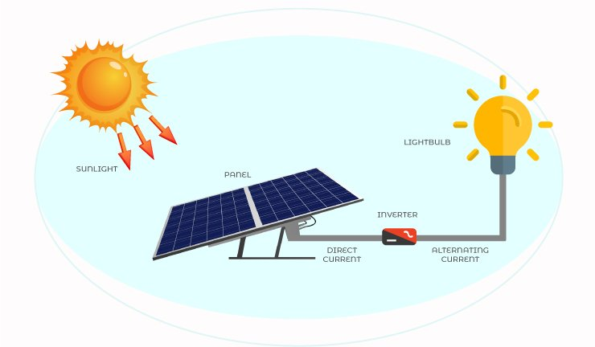
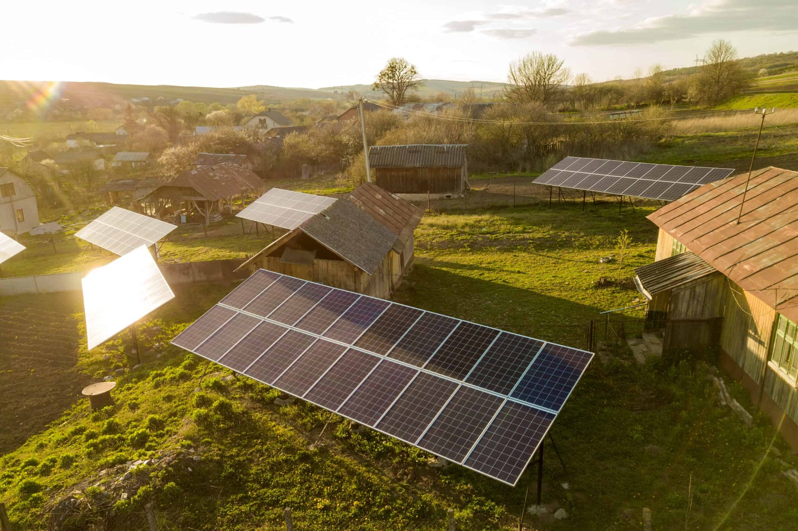
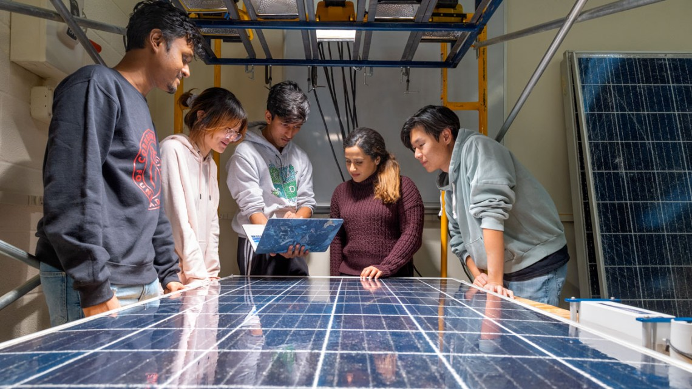

☀ Solar Energy
How the power of the sun can fuel a cleaner, fairer, and more affordable world for everyone.
What is Solar Energy?
Solar energy is the energy harnessed directly from sunlight. It is one of the most abundant and freely available sources of energy on our planet. The sun produces an enormous amount of energy every second — far more than humanity could ever use — making it a virtually limitless resource.
Unlike fossil fuels such as coal, oil, and natural gas, solar energy produces no carbon emissions when it generates electricity. This makes it a cornerstone of the global effort to combat climate change and achieve the UN's Sustainable Development Goal 7: Affordable and Clean Energy.

Figure 1: A solar panel farm harnessing sunlight to generate clean electricity. (Image: royalty-free via iStockPhoto)
How Solar Panels Work
Solar panels — also called photovoltaic (PV) panels — work by converting sunlight into electrical energy using semiconductor materials, most commonly silicon.
The Photovoltaic Effect
When photons from sunlight hit the solar cell, they knock electrons loose from their atoms. This flow of electrons creates a direct current (DC) of electricity. An inverter then converts this DC electricity into alternating current (AC), which is the type of electricity used in homes and businesses.
Types of Solar Technology
There are several types of solar technology in use today. Photovoltaic panels are the most common for home and commercial use. Concentrated Solar Power (CSP) uses mirrors to focus sunlight and generate heat, which drives a turbine to produce electricity. Solar thermal systems capture heat from the sun to warm water directly, reducing household energy bills.

Figure 2: How solar photovoltaic cells convert sunlight into usable electricity. (Image: royalty-free via iStockPhoto)
Benefits of Solar Energy
Solar energy offers a wide range of benefits — not just for the environment, but also for individuals, communities, and economies around the world.
Environmental Benefits
Solar power generates electricity with zero carbon emissions during operation, meaning it plays a critical role in reducing greenhouse gas concentrations in the atmosphere. It also requires no water to generate electricity (unlike coal or nuclear plants), which helps protect freshwater resources.
Economic Benefits
Once installed, solar panels have very low running costs. Households and businesses can significantly reduce their electricity bills, and in many countries, they can sell excess energy back to the grid. The global solar industry now employs millions of people, making it a major driver of green job creation.
Social Benefits
Solar energy can bring electricity to remote communities that are not connected to the national grid, improving access to lighting, clean water pumping, healthcare, and education. This directly supports SDG 7's goal of ensuring affordable, reliable, and modern energy access for all.

Figure 3: Solar panels bringing electricity to a rural community. (Image: royalty-free via iStockPhoto)
Key Facts & Figures
Solar energy is growing faster than any other energy source in history. Here are some key statistics that illustrate its rapid rise:
of global electricity now comes from solar — up from near zero in 2010
reduction in solar panel costs over the past decade
people still lack access to electricity — solar can change this
jobs created globally in the solar energy industry
Your Role as a Student
You might think you're too young or lack the resources to make a difference — but that's not true. As a student, you have real opportunities to advocate for and participate in the clean energy transition.
What Students Can Do Right Now
- Switch to a renewable energy supplier for your student accommodation
- Unplug chargers and devices when not in use to reduce electricity waste
- Join or start a sustainability society at your university
- Advocate for solar panels to be installed on university buildings
- Choose career paths and employers who invest in clean energy
- Share knowledge about solar energy with family and friends

Figure 4: Students engaging with solar energy at a university sustainability event. (Image: royalty-free via iStockPhoto)
The Future of Solar Energy
The future of solar energy is incredibly promising. Technological advancements are making solar cells more efficient, cheaper, and more versatile than ever before.
Emerging Technologies
Perovskite solar cells are a new generation of solar technology that promise even higher efficiency at lower manufacturing costs than traditional silicon cells. Solar roof tiles — designed to look like ordinary roof shingles — are making it easier and more aesthetically pleasing to integrate solar into buildings. Floating solar farms on reservoirs and lakes are also gaining ground as a space-saving solution.
Solar and Energy Storage
One of the key challenges with solar energy has been storing it for use when the sun is not shining. Battery storage technology, particularly lithium-ion and emerging solid-state batteries, is rapidly improving. Pairing solar panels with battery storage systems allows homes and businesses to run on solar power even at night or during cloudy days.
Take Action Today
Every action counts. Whether you are a student, a tenant, a homeowner, or a future professional — there are meaningful steps you can take to support the growth of solar energy and help achieve SDG 7.
- Sign petitions calling for renewable energy investment in your community
- Talk to your landlord about adding solar panels to your property
- Support businesses and organisations that use renewable energy
- Learn more about solar energy through free online courses and resources
- Reduce your personal energy consumption to lower demand for fossil fuels